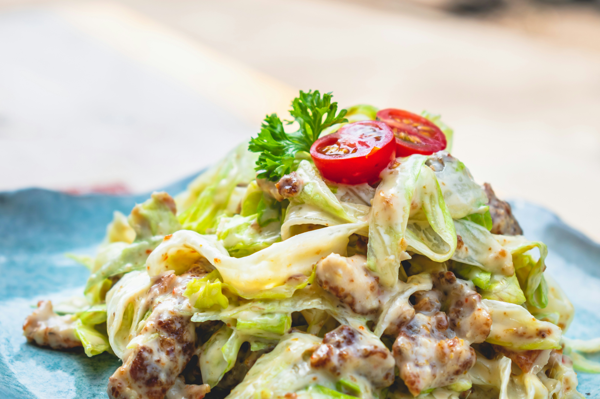

Back Home
Chicken Salad

Photo by ABHISHEK HAJARE on Unsplash
How To Make Chicken Salad
This homemade chicken salad recipe uses six simple ingredients and takes only 10 minutes to make from start to finish. After that, you can serve it up on salad greens, scoop it into pita bread or half an avocado, roll it up in a tortilla for a wrap, or serve it hot in a quesadilla or chicken melt.
Ingredients
- 1/2 cup blanched slivered almonds
- 1/2 cup mayonnaise
- 1 tablespoon lemon juice
- 1/2 teaspoon ground black pepper
- 2 cups chopped, cooked chicken meat
- 1 rib celery, chopped
Directions
- Gather all ingredients
- Place almonds in a frying pan. Toast over medium-high heat, shaking frequently. Watch carefully, as they burn easily.
- Mix together mayonnaise, lemon juice, and pepper in a medium bowl.
- Toss with chicken, toasted almonds, and celery.
- Enjoy!